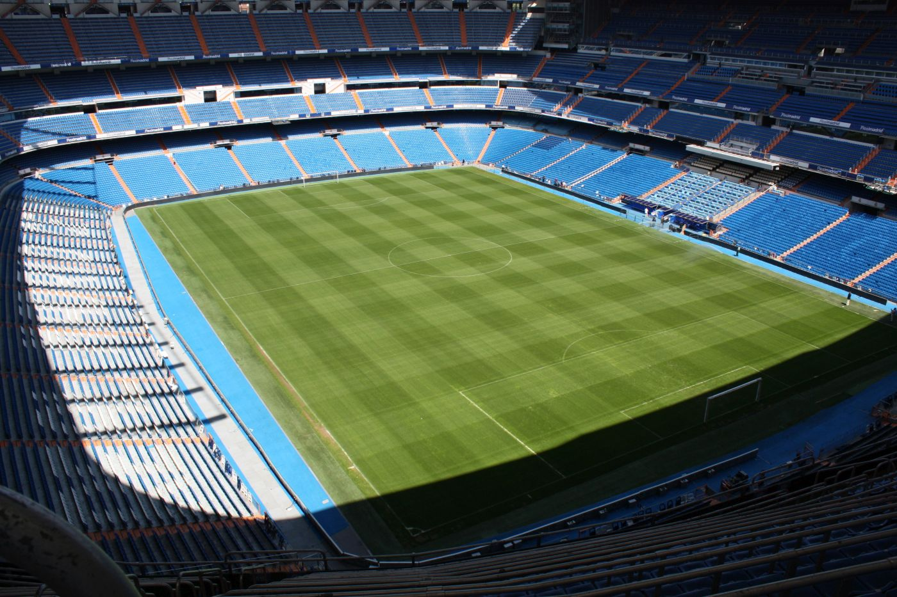
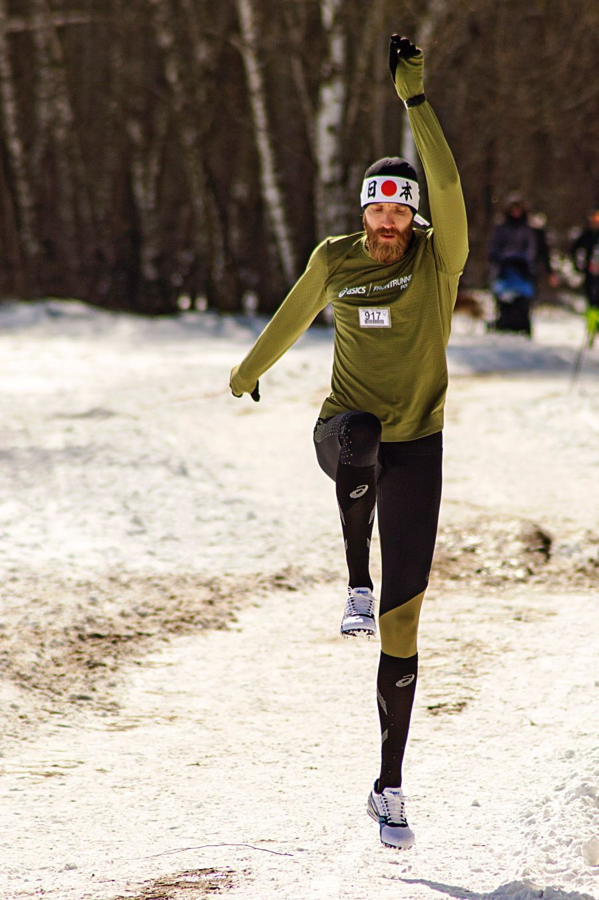
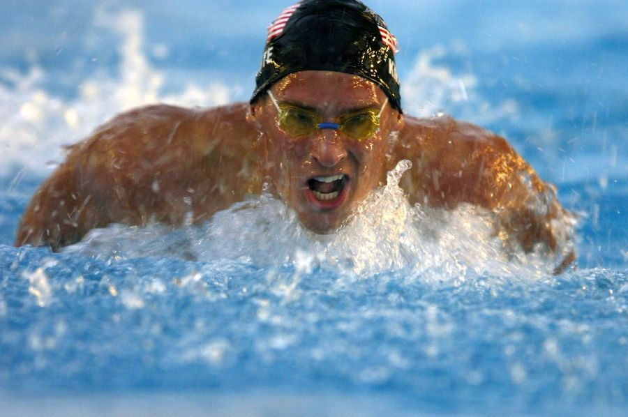
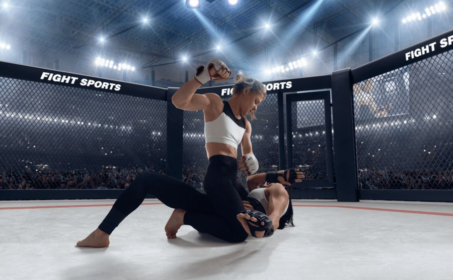
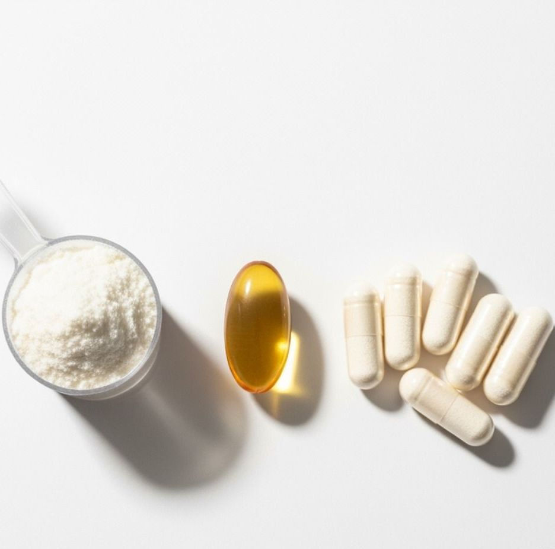

Megrendezik a nyíltan doppingos versenyeket! Új korszak kezdődik, vagy a sport utolsó nagy botránya jön?

SportSokáig csak provokatív ötletnek, internetes túlzásnak vagy cinikus sportipari poénnak tűnt, most azonban egyre komolyabban beszélnek róla: megrendezhetik az első olyan sportversenyeket, ahol a teljesítményfokozó szerek használata nem rejtett szabályszegés, hanem nyíltan vállalt része a rendszernek. Vagyis megszülethet az a mezőny, ahol nem a lebukás kockázata a kérdés, hanem az, ki mennyire képes kitolni az emberi test határait.
Az ötlet egyszerre sokkoló és logikus. Sokan régóta állítják, hogy az élsport már most is a biológia, az orvostudomány, a technológia és a pénz találkozási pontján működik, csak mindezt hivatalosan a „tiszta verseny” nyelvén csomagolja be. Egy nyíltan doppingos versenyrendszer ezt a képmutatást söpörné le az asztalról — legalábbis támogatói szerint.
A szabályszegésből új szabályrendszer lehet
A hagyományos sportvilág évtizedeken át úgy épült fel, hogy a tiltott szerek használata egyszerre számított erkölcsi vétségnek, sportszakmai csalásnak és egészségügyi kockázatnak. Most azonban egy újfajta gondolkodás próbál helyet kérni: mi történik, ha valaki nem elrejteni akarja a teljesítményfokozást, hanem beépíteni egy külön ligába, külön szabályokkal, külön orvosi felügyelettel és teljesen nyílt kommunikációval?
A támogatók szerint ez a modell legalább őszinte lenne. Nem lenne szükség hosszú utólagos vizsgálatokra, évekkel később elvett érmekre, titkos kezelésekre vagy végtelen botrányokra. A néző pontosan tudná, mit lát, a sportoló pedig pontosan tudná, milyen rendszerbe lép be. A kritikusok szerint viszont épp ez a legijesztőbb benne: ami eddig kivételnek és botránynak számított, abból hirtelen legitim látványosság lenne.
Miért váltott ki ekkora vitát az ötlet?
- Mert a sport egyik legfontosabb alapelvét, az egyenlő feltételekbe vetett hitet támadja meg.
- Mert sokak szerint a nyíltság nem oldja fel az egészségügyi kockázatokat, csak láthatóbbá teszi őket.
- Mert a pénz és a rekordhajszolás még erősebben nyomhatná bele a sportolókat a veszélyes döntésekbe.
- Mert teljesen új kérdést vet fel arról, hogy valójában mit ünneplünk a sportban: az embert vagy a határait módosító rendszert.



A rekordok biztosan jönnének, de milyen áron?
Az ilyen versenyek egyik legerősebb marketingígérete nyilvánvaló: gyorsabb idők, nagyobb erő, látványosabb teljesítmények, megdöntött csúcsok. Egy olyan korszakban, ahol minden figyelemért versenyez, a „minden eddiginél extrémebb” sportesemények könnyen magukhoz vonzhatják a közönséget. A kérdés csak az, hogy a néző valóban kíváncsi-e erre, vagy csupán a botrány ereje húzná fel átmenetileg az érdeklődést.
Mert a rekord önmagában nem minden. A sport ereje sokszor nem is pusztán az eredményben rejlik, hanem abban a hitben, hogy az emberi teljesítmény mögött fegyelem, tehetség, munka és mentális állóképesség áll. Ha ezt az élményt túlhangsúlyozott laborháttér váltja fel, akkor könnyen előfordulhat, hogy a csodálat helyét a kíváncsisággal kevert távolságtartás veszi át.
A támogatók ugyanakkor azt mondják, hogy az élsport így is rég messze jár a romantikus amatőreszménytől. Speciális étrendek, magassági edzőtáborok, alvásoptimalizálás, teljes biometrikus monitorozás, személyre szabott regenerációs programok és csúcstechnológiás felszerelések már most is jelentősen torzítják a „természetes” verseny fogalmát. Szerintük a nyíltan doppingos liga csak kimondaná azt, amit sokan eddig is sejtettek: a teljesítményfokozás valamilyen formában már rég a rendszer része.
Ez az érvelés azonban nem győz meg mindenkit. A különbség nemcsak jogi vagy kommunikációs, hanem morális és orvosi is. Egy fejlettebb cipő vagy precízebb regenerációs terv nem ugyanaz, mint olyan szerek használata, amelyek közvetlenül beavatkoznak a hormonrendszerbe, a vérképbe vagy a szervezet terhelhetőségébe.

A legnagyobb kérdés mégsem a nézőké, hanem a sportolóké
Bármennyire látványos is a vita a közvélemény szemszögéből, a legfontosabb dimenzió mégis az, hogy milyen nyomás nehezedne a sportolókra. Ha egy új liga pénzt, figyelmet, szponzorációt és hírnevet ígér, akkor sokan olyan döntési helyzetbe kerülhetnek, ahol az egészség, a karrier és a rövid távú siker közötti választás már nem valódi szabadságként, hanem kényszerként jelenik meg.
És éppen itt húzódik a legélesebb határ: lehet ugyan azt mondani, hogy mindenki önként vállalja a részvételt, de a profi sport világában az önkéntesség sokszor együtt mozog a kiszolgáltatottsággal. Egy sérülésből visszatérő sportoló, egy lecsúszóban lévő versenyző vagy egy áttörésre váró fiatal atléta egészen másképp érzékeli a „szabad döntés” lehetőségét, mint ahogy azt kívülről elképzeljük.
Akár megvalósulnak ezek a versenyek, akár nem, az biztos, hogy az ötlet már most kényelmetlen pontossággal mutat rá a sportvilág ellentmondásaira. Mert miközben sokan felháborodnak a nyíltan doppingos formátumon, valójában ugyanaz a rendszer nézi őrült figyelemmel a gyorsabb időket, a nagyobb ugrásokat, az extrémebb teljesítményeket és a folyamatos rekorddöntéseket.
A kérdés tehát talán nem is az, hogy akarunk-e ilyen versenyeket. Inkább az, hogy mennyire vagyunk őszinték abban, amit a sportról gondolunk. Ha a teljesítmény mindenek felett áll, előbb-utóbb valaki mindig megpróbálja majd kitolni a határt. Most úgy tűnik, ez a kísérlet már nem a háttérben, hanem a reflektorfényben történne meg.

Hozzászólások